앱 사랑방
목회자들이 함께 만들고, 함께 다듬는 앱 갤러리
폰 카메라로 QR을 비추면 바로 열려요.
체험판에서는 마음껏 눌러 보셔도 아무것도 저장되지 않아요.
앱 사랑방은 이런 곳이에요
처음 앱을 만들기 시작한 목회자들이 서로의 앱을 구경하고, 따뜻한 의견을 나누고, 그 의견으로 앱을 더 좋게 고쳐 가는 곳입니다. 화면 아래쪽 메뉴 4개로 움직여요.
차례
📲 폰에 앱으로 설치하기
한 번 설치하면 바탕화면 아이콘으로 바로 열려요. 주소를 다시 찾을 필요가 없습니다.
- 앱 사랑방 주소를 열고, 오른쪽 위 📲 설치 버튼이나 첫 화면의 파란 › 설치하기 안내를 눌러요.
- 쓰시는 폰에 맞는 설치 방법이 저절로 나와요. 그대로 따라 하시면 됩니다.
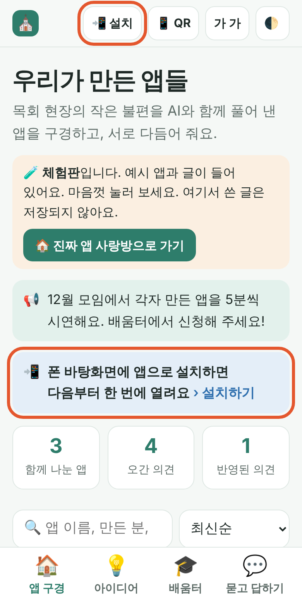
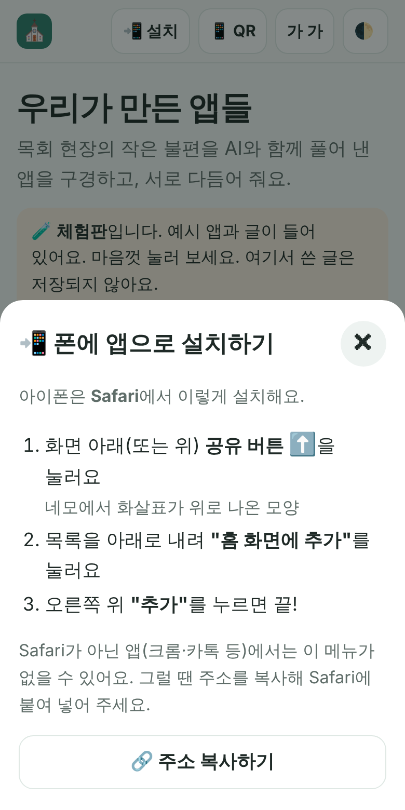
안드로이드폰 · 카카오톡에서 열었을 때
| 폰 | 설치 방법 |
|---|---|
| 안드로이드 (크롬) | 📲 설치를 누르면 설치 창이 바로 떠요. 설치만 누르면 끝! 창이 안 뜨면 오른쪽 위 ⋮ → 앱 설치(홈 화면에 추가). |
| 아이폰 (Safari) | 아래쪽 공유 버튼 ⬆️ → 홈 화면에 추가 → 추가. 아이폰은 Safari에서만 돼요. |
| 카카오톡에서 연 경우 | 카톡 안의 화면에서는 설치가 안 돼요. ⋮ 또는 공유 → 다른 브라우저로 열기를 먼저 하세요. 안드로이드는 Chrome으로 바로 열기 버튼이 있어요. |
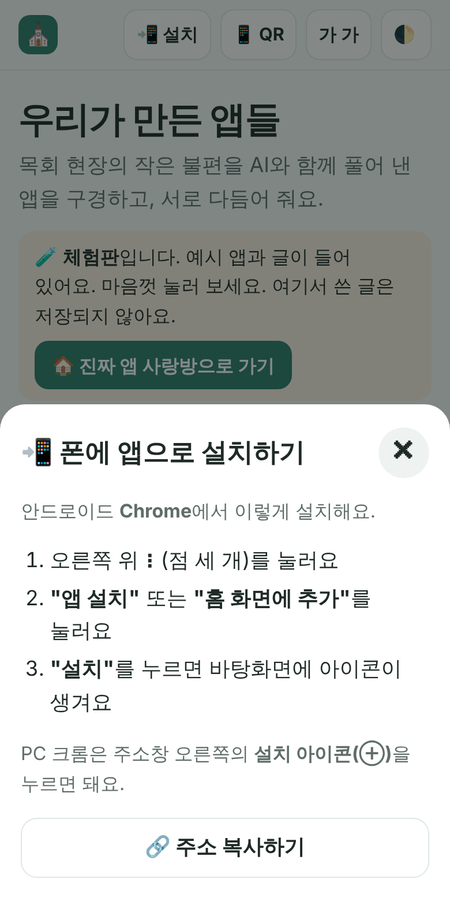
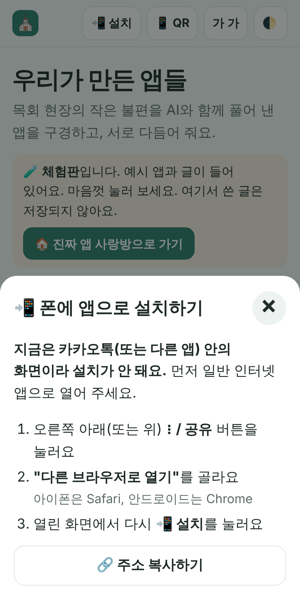
🏠 첫 화면 둘러보기
첫 화면에는 함께 나눈 앱이 카드로 모여 있어요.
| 버튼 | 하는 일 |
|---|---|
| 📱 QR | 앱 사랑방 QR을 크게 띄워요. 모임 때 화면에 띄워 두면 모두 바로 접속해요. |
| 가가 | 글씨를 크게 바꿔요. 프로젝터로 보여 줄 때 좋아요. |
| 🌓 | 밝은 화면, 어두운 화면, 폰 설정 따라가기를 차례로 바꿔요. |
| 찾기 · 정렬 · 분야 | 앱 이름이나 만든 분으로 찾고, 최신순·공감순·의견 많은 순으로 바꿔 보고, 설교·교육·기도 같은 분야별로 모아 봐요. 🙋 도움 필요를 누르면 도움을 구하는 앱만 보여요. |
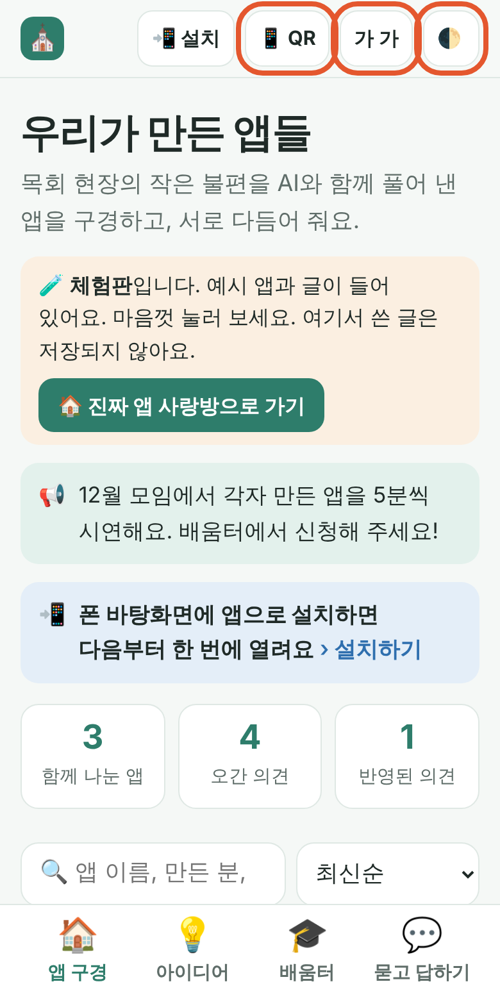
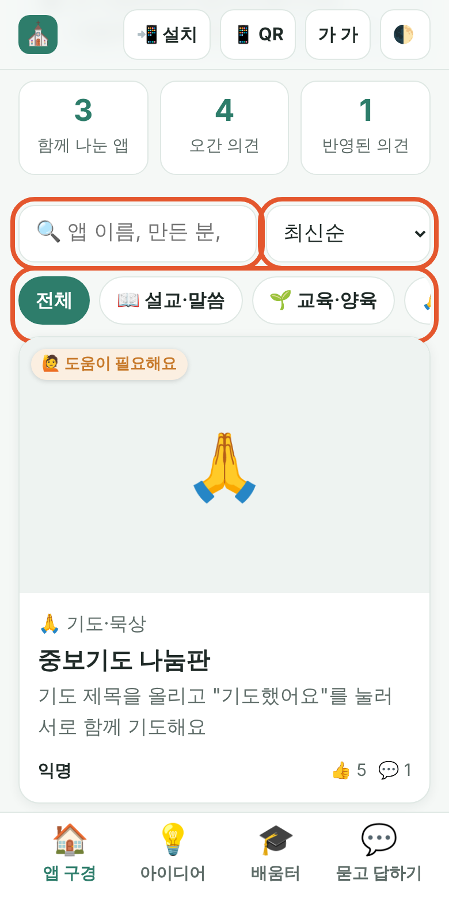
앱 카드와 최근 소식
- 앱 카드 한 장에 대표 사진, 상태, 분야, 앱 이름, 한 줄 설명, 만든 분, 👍 좋아요 수, 💬 의견 수가 나와요. 카드를 누르면 자세한 화면으로 들어가요.
- 상태 표시: ✅ 사용 중 🔨 만드는 중 🙋 도움이 필요해요
- 맨 끝의 ＋ 내 앱 등록하기 카드로 내 앱을 올려요. (5장)
- 아래쪽 🔔 최근 소식에서 새 앱, 새 의견, 업데이트, 답변을 한눈에 봐요.
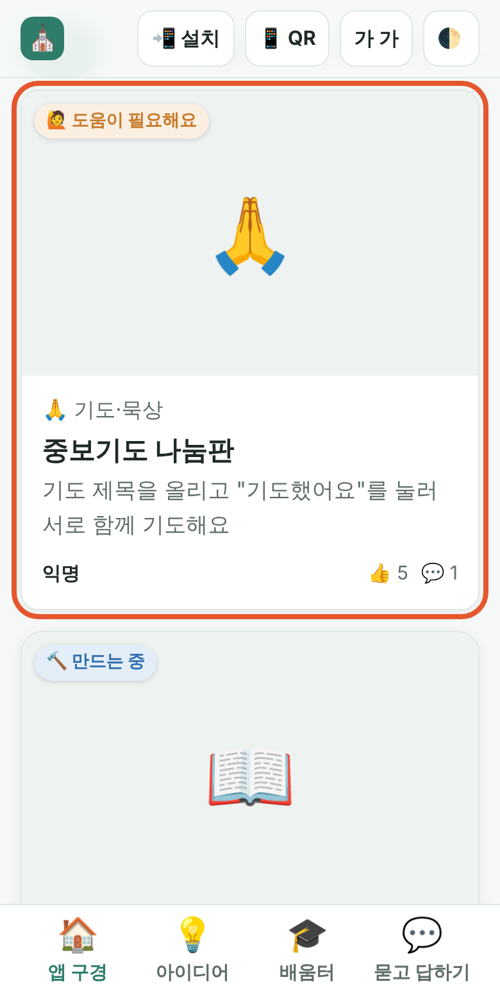
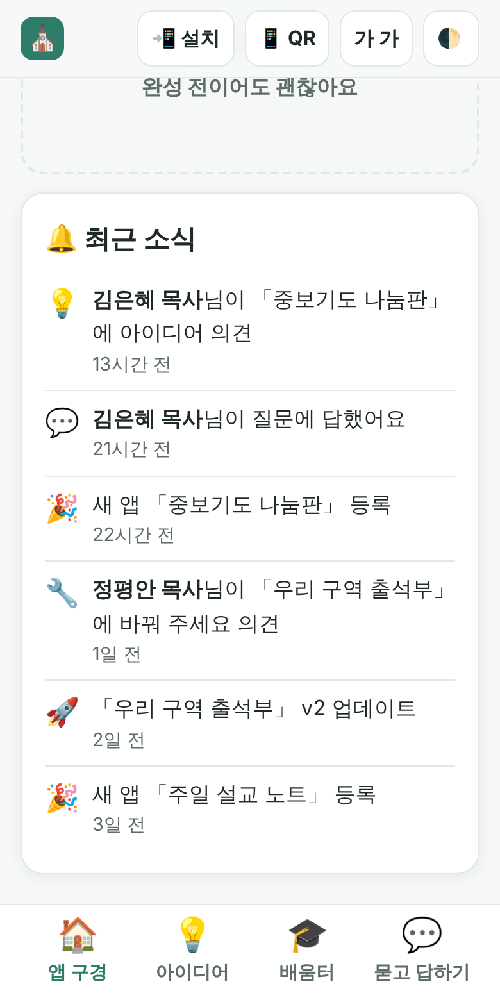
🔍 앱 한 개를 자세히 보기
- 🚀 앱 바로 열기 — 그 앱을 직접 써 봐요.
- 📱 QR로 열기 — 앱 QR을 띄워요. 시연할 때 모두가 자기 폰으로 따라 열 수 있어요.
- 👍 좋아요 — 마음에 들면 눌러 응원해 주세요.
- 📘 이렇게 써요 — 만든 분이 적은 사용법 3~5줄이에요. 스크린샷이 있으면 옆으로 넘겨 보고, 누르면 크게 보여요.
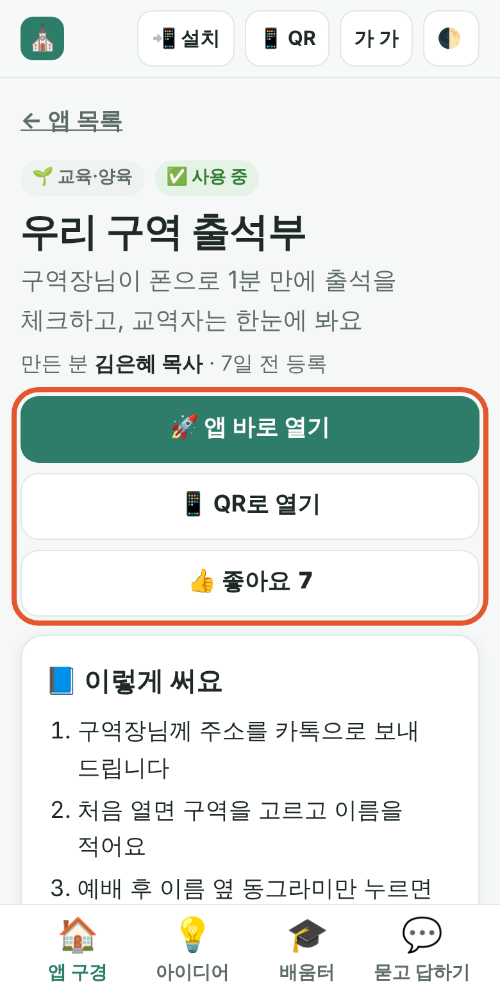
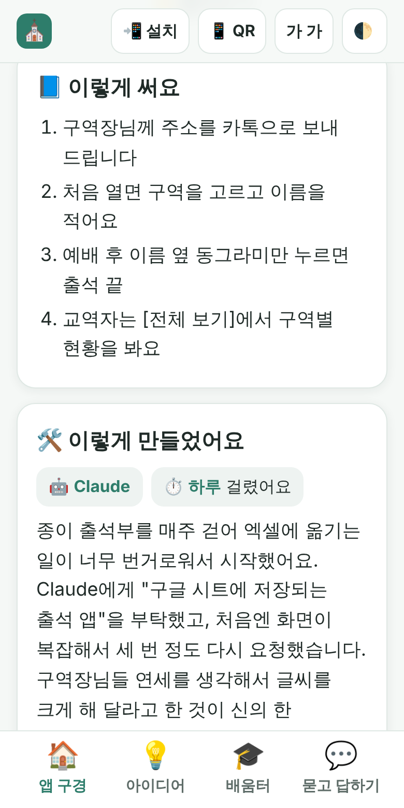
만든 이야기, AI 요청문, 자라 온 기록
- 🛠️ 이렇게 만들었어요 — 어떤 AI 도구로, 얼마나 걸려, 어디서 막혔는지 나눈 이야기예요. 막혔던 이야기가 다른 분께 가장 큰 도움이 돼요.
- 🧩 이렇게 부탁했어요 — 만든 분이 AI에게 처음 쓴 요청문이에요. 📋 요청문 복사를 누르면 그대로 복사돼요. Claude나 ChatGPT에 붙여 넣고 내 교회에 맞게 고치면 비슷한 앱을 만들 수 있어요.
- 📈 자라 온 기록 — v1, v2, v3… 앱이 의견을 받아 어떻게 좋아졌는지 보여 줘요.
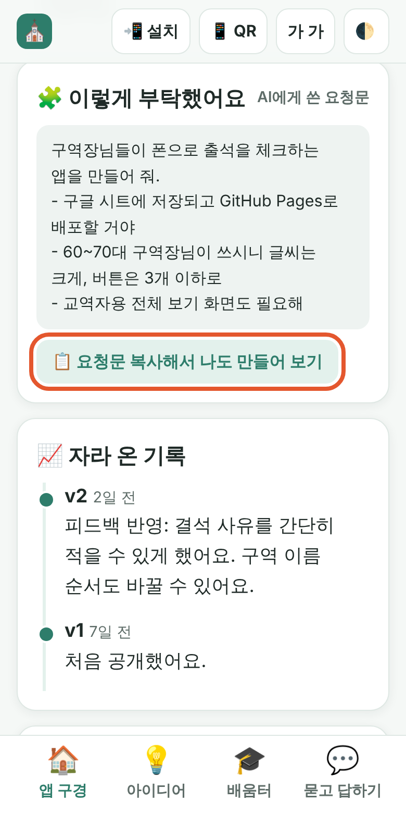
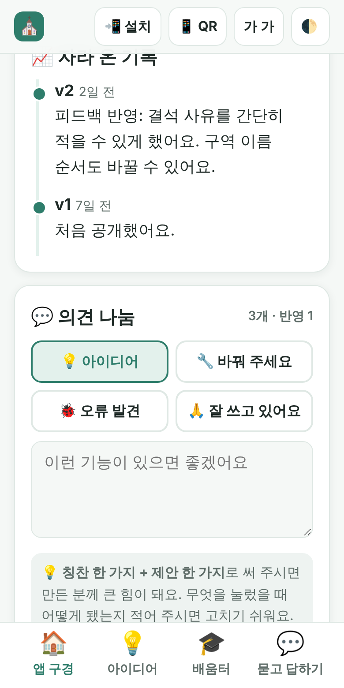
💬 의견 나누기
앱을 써 보고 느낀 점을 남겨 주세요. 의견이 모여야 앱이 자랍니다.
- 의견 종류를 골라요: 💡 아이디어 🔧 바꿔 주세요 🐞 오류 발견 🙏 잘 쓰고 있어요
- 내용을 적고 이름을 적어요. 비워 두면 '익명'으로 올라가요.
- 의견 보내기를 눌러요. 다른 분 의견에 공감하면 👍 공감을 눌러요.
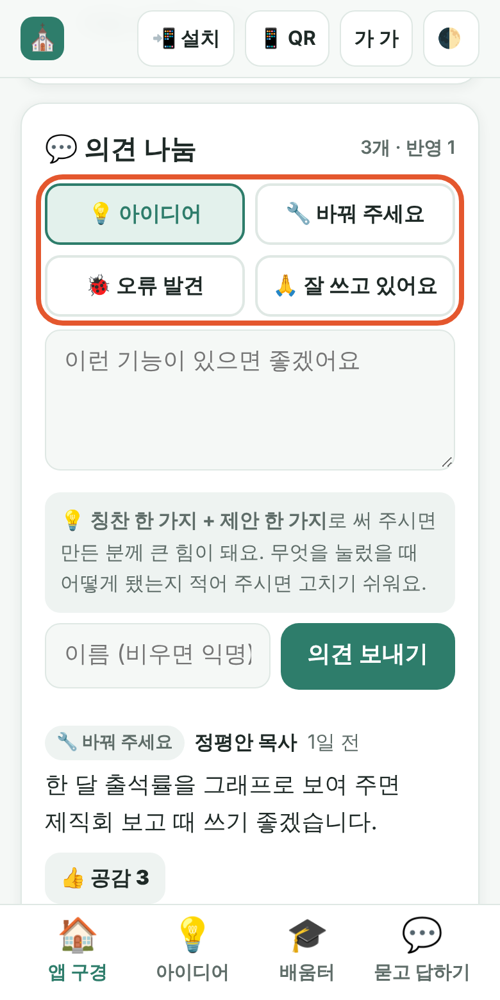
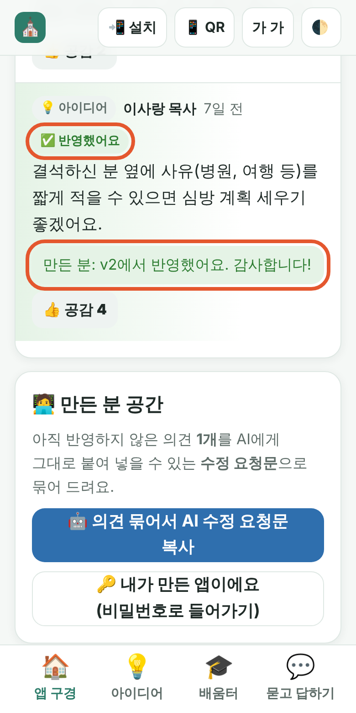
＋ 내 앱 등록하기
첫 화면 맨 끝의 ＋ 내 앱 등록하기를 눌러요. 완성 전이어도 괜찮아요. 상태를 🙋 도움이 필요해요로 두면 다른 분들이 먼저 찾아와 의견을 남겨 줘요.
| 칸 | 적는 법 |
|---|---|
| 앱 이름 · 한 줄 설명 · 주소 (필수) | 한 줄 설명에는 "무엇을 해결해 주는 앱인지"를 적어요. 주소는 GitHub Pages 주소예요. |
| 분야 · 지금 상태 · 만든 분 | 이름 대신 "익명"으로 보여 줄 수도 있어요. |
| 스크린샷 (최대 3장) | 폰 화면을 캡처해 고르면 저절로 올라가요. 첫 장이 대표 사진이 돼요. |
| 사용법 · AI 도구 · 걸린 시간 · 만든 이야기 · 요청문 | 사용법은 한 줄에 하나씩 3~5줄로 써요. 요청문은 쓰지 않아도 되지만, 나누면 다른 분이 따라 만들 수 있어요. |
| 비밀번호 (필수) | 4자리 이상. 나중에 앱 정보를 고치거나 의견에 "반영" 표시를 할 때 써요. 꼭 기억해 두세요. |
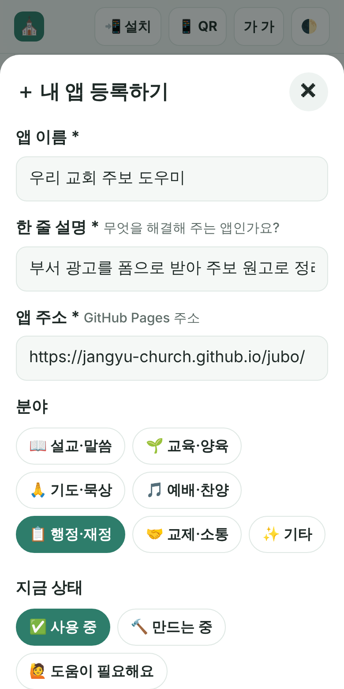
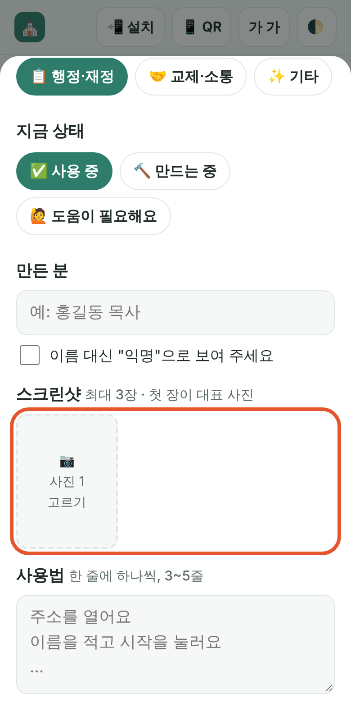
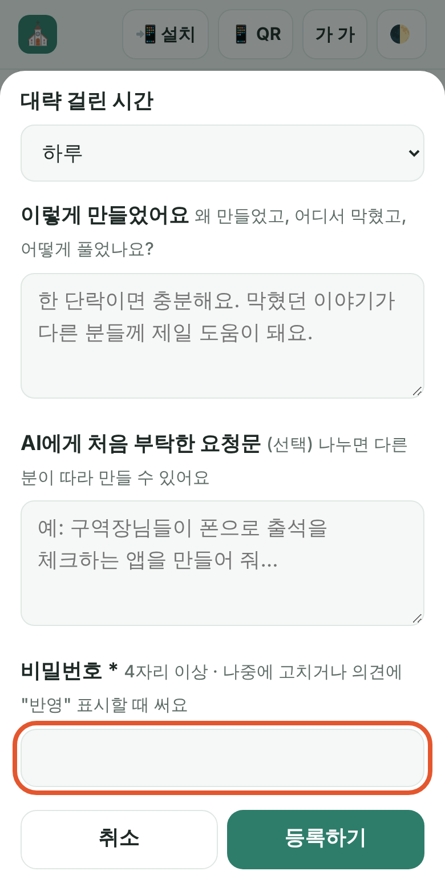
🧑💻 받은 의견으로 앱 고치기
내 앱 화면 맨 아래 만든 분 공간에서 의견을 정리하고, 앱을 고치고, 고친 소식을 알려요.
- 🤖 의견 묶어서 AI 수정 요청문 복사 — 아직 반영하지 않은 의견을 한 번에 정리해 복사해 줘요. Claude나 ChatGPT에 그대로 붙여 넣으면 AI가 의견대로 코드를 고쳐 줘요. 가장 쓸모 있는 기능이에요!
- 🔑 내가 만든 앱이에요 — 등록할 때 정한 비밀번호를 넣으면 만든 분으로 들어가요.
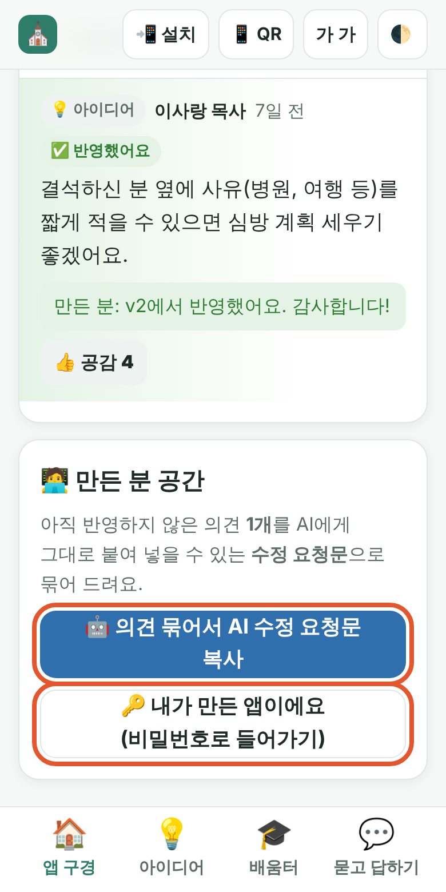
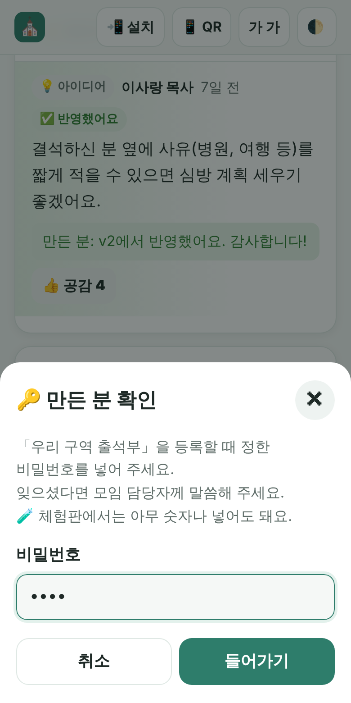
✅ 반영 표시와 🚀 업데이트 소식
- 의견대로 고쳤으면 그 의견의 ✅ 반영했어요 표시를 누르고 감사 한마디를 남겨요. 의견 주신 분께 큰 기쁨이 돼요.
- 🚀 업데이트 소식 올리기 — 버전(v2, v3…)과 바뀐 점을 적어요. 자라 온 기록과 첫 화면 최근 소식에 올라가요. 이때 앱 상태도 함께 바꿀 수 있어요.
- ✏️ 앱 정보 고치기 — 설명, 사진, 사용법, 비밀번호를 바꿔요.
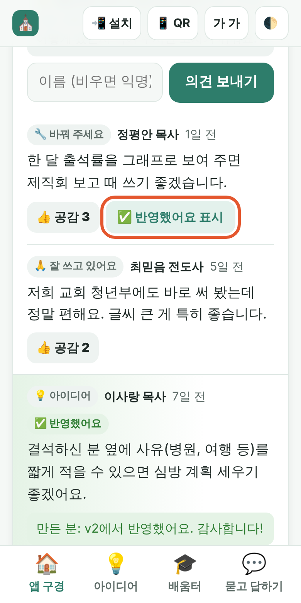
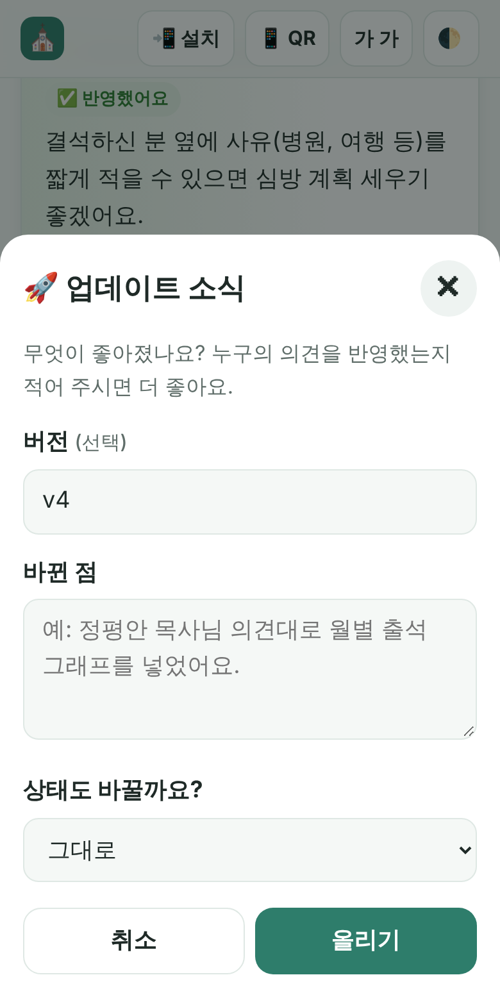
💡 "나는 이런 앱 만들고 싶어요"
아직 만들 줄 몰라도 괜찮아요. 필요한 앱을 적어 두면 같은 고민을 가진 분이 모이고, 누군가는 손을 들어 만들어 줘요.
- 아이디어 올리기 — 어떤 앱인지, 어떤 불편을 해결하는지 적어요.
- 🙋 나도 필요해요 — 같은 필요가 있으면 눌러요. 많이 눌린 아이디어가 위로 올라가요.
- 🔨 제가 만들어 볼게요 — 만들어 보고 싶으면 손을 들어요. 여러 분이 함께 들어도 돼요.
- 🤖 AI 요청문 — 이 아이디어로 앱을 만들어 달라는 요청문을 복사해 줘요. 구글 시트와 GitHub Pages 방식까지 들어 있어요.
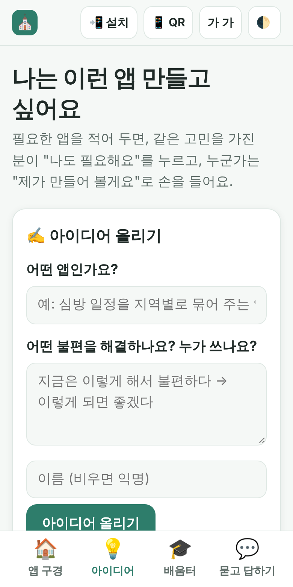
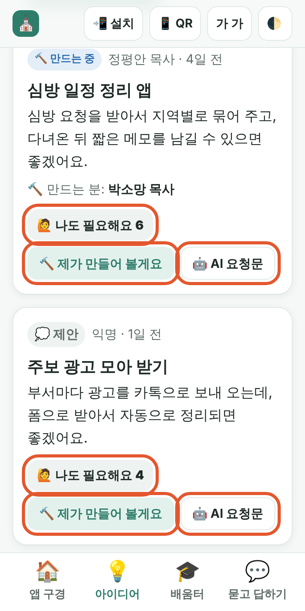
🎓 강의 주제 신청과 시연 신청
- 🎓 듣고 싶은 강의 주제 — 배우고 싶은 것을 적고, 다른 분의 신청에는 🙋 저도 듣고 싶어요를 눌러 투표해요. 표를 많이 받은 주제부터 🥇🥈🥉로 보여요.
- 🎤 시연 신청 — 다음 모임에서 내 앱을 5분 동안 보여 주고 싶으면 신청해요. 완성 전인 앱도, "여기서 막혔어요"도 좋은 시연이에요.
- 🧭 처음 시작하는 분께 — 불편 고르기 → AI에게 부탁하기 → GitHub Pages에 올리기 → 사랑방에 올리기 → 의견 반영하기, 다섯 단계를 짧게 안내해요.
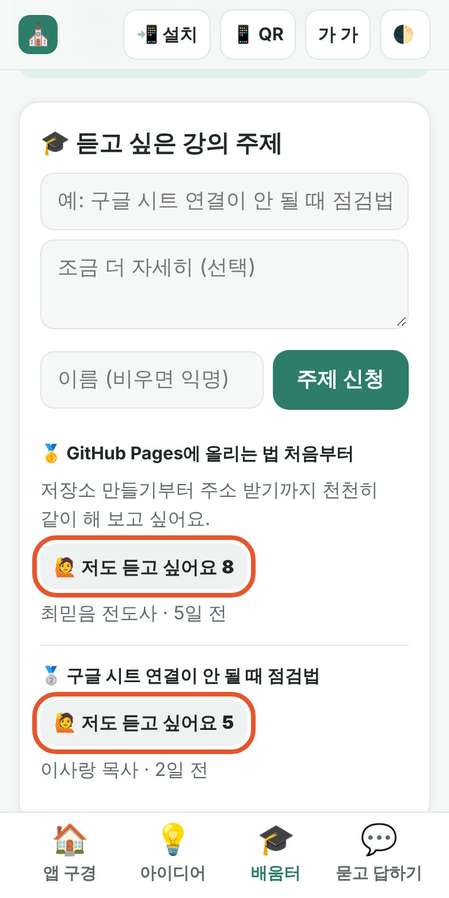
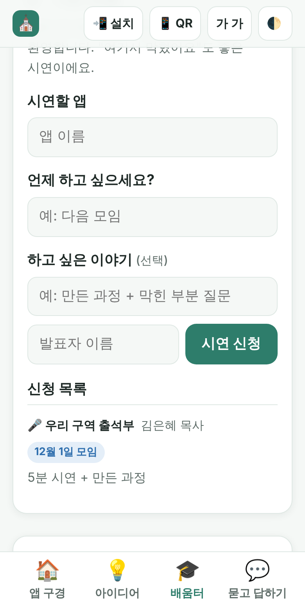
💬 막힌 곳을 함께 풀어요
- 질문하기 — 한 줄 제목을 쓰고, "무엇을 하려고 했고, 무엇을 눌렀고, 어떤 메시지가 떴는지" 적어요.
- ⏳ 답을 기다려요를 누르면 아직 답이 없는 질문만 모여요. 아는 것이 있으면 먼저 답해 주세요.
- 답이 도움이 되면 🙏 도움됐어요를 누르고, 문제가 풀리면 질문하신 분이 ✅ 해결됐어요를 눌러요.
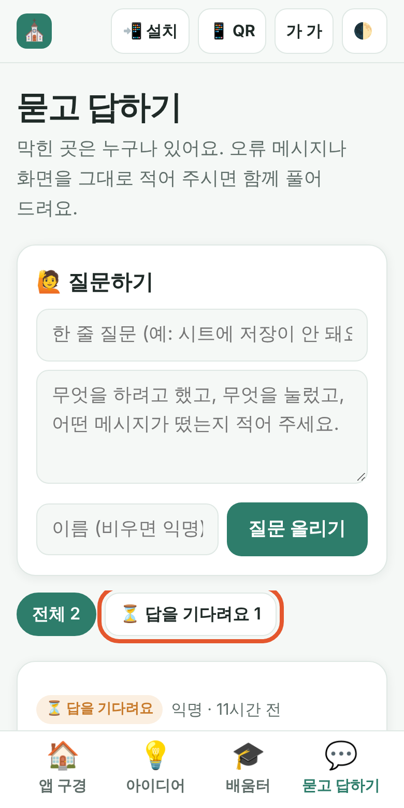
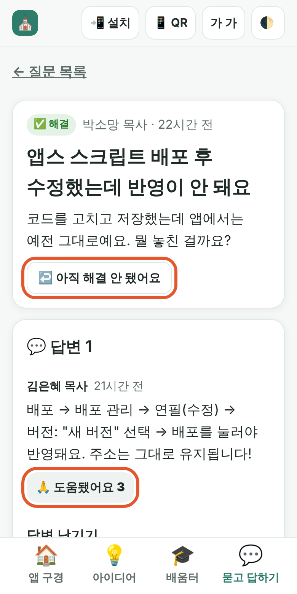
📽️ 프로젝터로 함께 볼 때
- 노트북으로 체험판(또는 실제 앱)을 열고 오른쪽 위 가가를 눌러 글씨를 크게 해요.
- 📱 QR을 눌러 화면에 띄우면 참석자들이 폰 카메라로 바로 접속해요.
- 시연할 때는 그 앱 화면의 📱 QR로 열기를 띄워요. 모두가 자기 폰에서 앱을 직접 써 보며 들을 수 있어요.
- 체험판으로 연습한 뒤 🏠 진짜 앱 사랑방으로 가기를 눌러 실제 앱에 각자 앱을 등록해요.
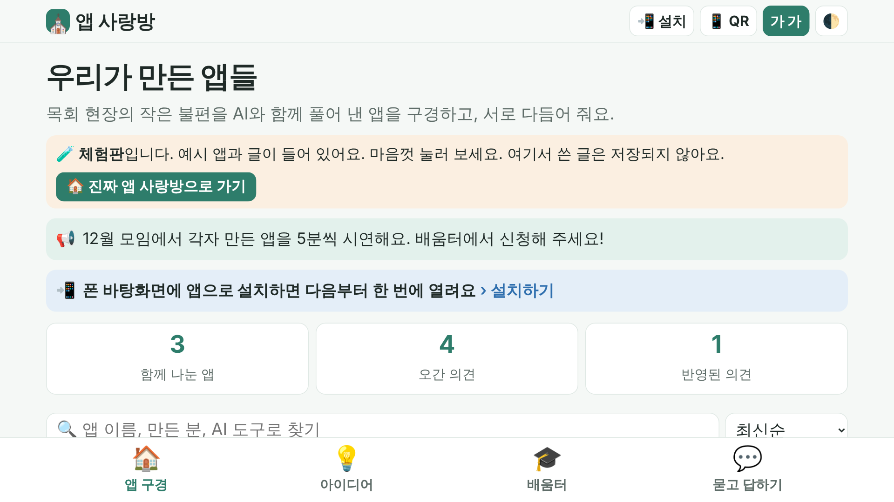
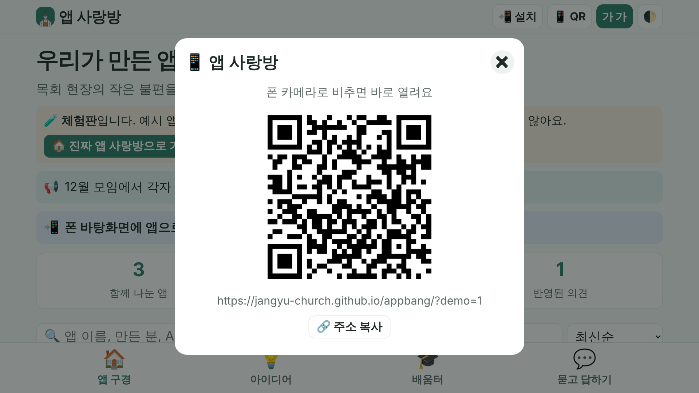
❓ 이럴 땐 이렇게 하세요
| 궁금한 점 | 답 |
|---|---|
| 체험판과 실제 앱은 무엇이 달라요? | 체험판은 예시 앱과 글이 들어 있는 연습용이에요. 무엇을 눌러도 저장되지 않아요. 실제 앱에서 쓴 글과 사진만 저장돼요. |
| 스크린샷은 어떻게 찍어요? | 내 앱을 폰으로 열고 화면을 캡처하세요. 아이폰은 옆 버튼과 볼륨 위 버튼을 함께 누르고, 안드로이드는 전원 버튼과 볼륨 아래 버튼을 함께 눌러요. 등록할 때 사진에서 고르면 크기는 저절로 줄여서 올려 줘요. |
| 앱 주소는 어디서 찾아요? | GitHub 저장소 → Settings → Pages에 나오는 주소예요. 보통 https://아이디.github.io/저장소이름/ 모양이에요. |
| 비밀번호를 잊었어요. | 모임 담당자께 말씀해 주세요. 관리자 비밀번호로 대신 들어가 도와드릴 수 있어요. |
| 잘못 올린 글을 지우고 싶어요. | 모임 담당자께 말씀해 주세요. 담당자가 숨겨 드려요. |
| 새 글이 안 보여요. | 앱을 닫았다 다시 열거나 새로고침해 주세요. 앱을 다시 열 때마다 새 소식을 불러와요. |
| 이름을 매번 적어야 하나요? | 아니요. 한 번 적으면 그 폰이 기억해 두었다가 다음부터 자동으로 채워 줘요. |
서로의 앱을 다듬어 주는 따뜻한 사랑방이 되기를 바랍니다.